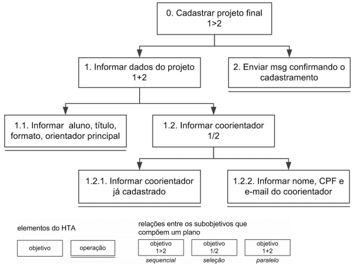
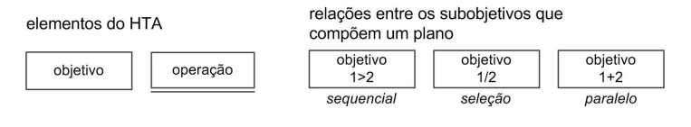
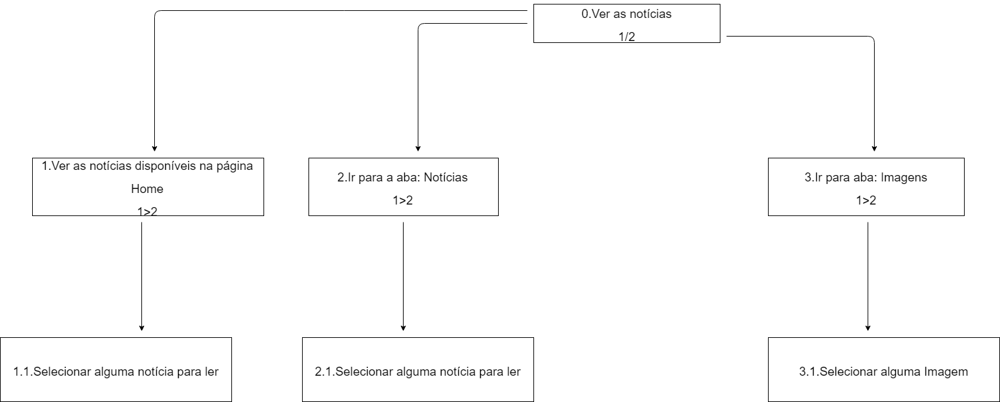
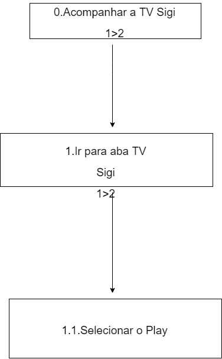
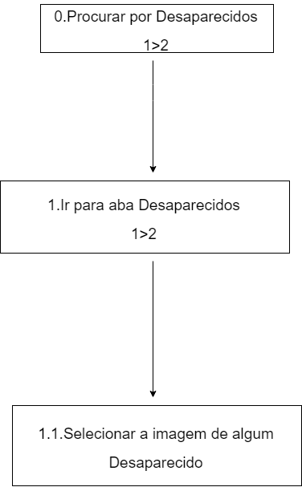
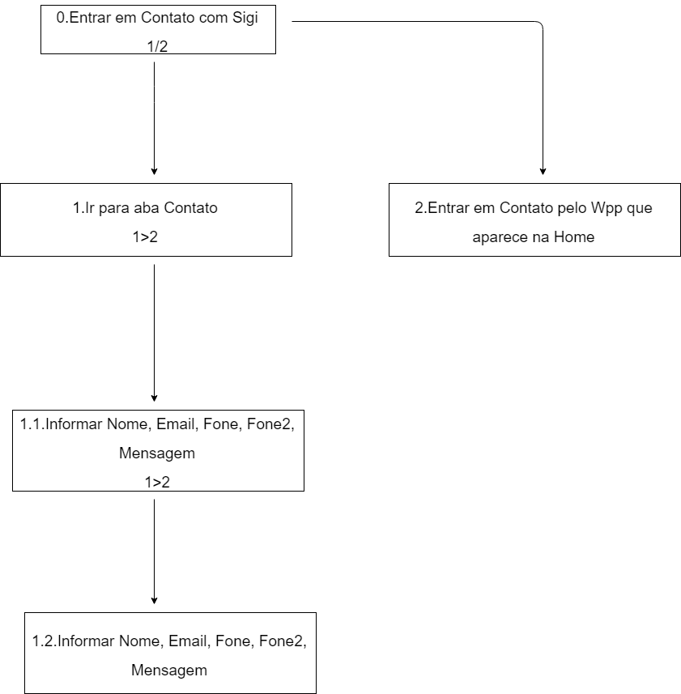

Análise de Tarefa
Introdução
Uma análise de tarefas é utilizada para se ter um entendimento sobre qual é o trabalho dos usuários, como eles o realizam e por quê realizam. Geralmente é realizado em um nível mais alto de abstração, visto que muitos detalhes a respeito do sistema ainda não estarão bem definidos.
Alguns métodos de análise de tarefas mais comuns:
- Análise Hierárquica de tarefas (HTA - Hierarchical Task Analysis)
- GOMS (Goals, Operators, Methods, Selection Rules)
- ConcurTaskTrees (CTT)
Apenas a Análise Hierárquica de Tarefas será estudada mais aprofundamente, porque foi o método escolhido e utilizado para realizar a análise de tarefa da plataforma SigiVilares.
Análise Hierárquica de Tarefas (HTA)
A Análise Hierárquica de Tarefas tem como proposta entender as competências e habilidades associadas às tarefas complexas e, usualmente, não repetitivas, bem como auxiliar na identificação de problemas de desempenho. A ideia básica desta análise é relacionar o que as pessoas fazem (tarefas), por que o fazem e quais são as consequências, caso não façam corretamente.
O ponto de partida desta análise são os objetivos do usuário. A partir de um objetivo, as principais tarefas associadas ao alcance deste objetivo são identificadas.
 
-
Tarefa: É qualquer parte do trabalho que precisa ser realizado
-
Objetivo: Representam o que o usuário quer realizar utilizando o sistema
-
Operação: É um objetivo que não possui nenhum subobjetivo (tarefa não mais decomposta)
-
Plano: São os subobjetivos de um objetivo
-
1>2: Sequêncial
-
1/2: Seleção
-
1+2: Paralelo
HTA1: Ver Notícias

HTA2: Acompanhar TV Sigi

HTA3: Procurar Desaparecidos

HTA4: Entrar em contado com Sigi Vilares

Referências
BARBOSA. Interação Humano-Computador, Capítulo 8 - Princípios e Diretrizes para o Design de IHC. 2º/2019. 12 páginas. Material apresentado para a disciplina de Interação Humano Computador no curso de Engenharia de Software da UnB, FGA.
SIGI VILARES. Blog do SigiVilares, 2010-2014. Disponível em: https://www.sigivilares.com.br. Acesso em: 09 setembro 2019.